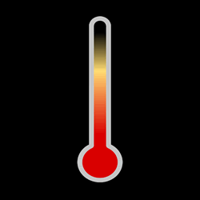
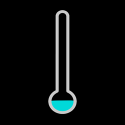
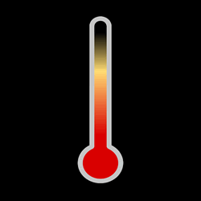
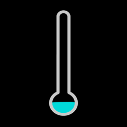

Launch Elapsed
L+26.20.14.31
From Earth
868539.3 mi.

To L2 Orbit
30161.3 mi.
Distance Complete
96.5958 %
Cruising Speed
0.1391 mi/s

Hot Side
51Fb
134Fa
Cold Side
-330Fd
-340Fc
Launch Elapsed
L+26.20.14.31
From Earth
868539.3 mi.
To L2 Orbit
30161.3 mi.
Distance Complete
96.5958 %
Cruising Speed
0.1391 mi/s
Hot Side
51Fb
134Fa
Cold Side
-330Fd
-340Fc
WHERE IS WEBB?
Most recently completed:
Mirror Segment Deployment Tracker
Nominal Event Time: Launch + 18-28 days
Status:
The adjacent image tracks the progress of the individual primary mirror segments (A,B,C) and the secondary (SM) mirror as they move upward 12.5mm from their stowed launch position to a deployed state where they are ready for the mirror alignment process.
The adjacent image tracks the progress of the individual primary mirror segments (A,B,C) and the secondary (SM) mirror as they move upward 12.5mm from their stowed launch position to a deployed state where they are ready for the mirror alignment process.
PARTNERS:
JWST:
CONTACT: